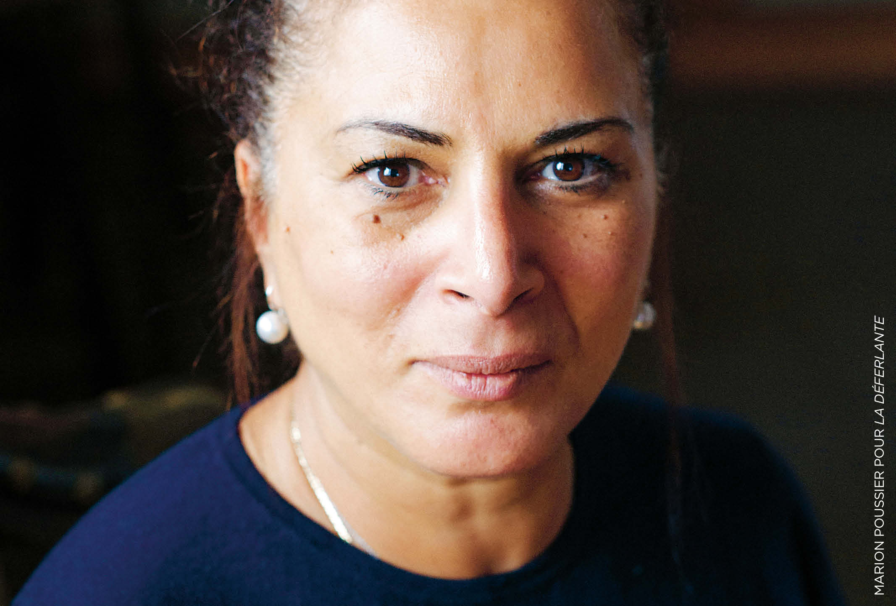

Personnes à ne pas oublier
Découvrez les personnes référencées par Vision Libre et les affaires auxquelles elles sont liées.
Découvrir les profils →Populus Vigilat.
Vision Libre documente des personnes, des affaires et des faits d'intérêt public qui méritent de rester accessibles et compréhensibles.
Le projet porte notamment une attention particulière à celles et ceux qui révèlent des faits graves, dénoncent des abus de pouvoir, des dysfonctionnements, des atteintes aux droits ou à la démocratie.
Notre objectif n'est pas de vous dire quoi penser. Nous rassemblons des faits, des documents, des enquêtes, des décisions de justice et des témoignages afin que chacun puisse se faire sa propre opinion.

Découvrez les personnes référencées par Vision Libre et les affaires auxquelles elles sont liées.
Découvrir les profils →Rassembler les faits, les documents et les sources permettant de comprendre chaque dossier.
Replacer les événements dans leur contexte afin d'éviter les interprétations simplistes.
Présenter également les éléments qui nuancent, contestent ou contredisent certaines affirmations.
Conserver une trace accessible des affaires et des personnes qui risquent de disparaître de l'espace public.